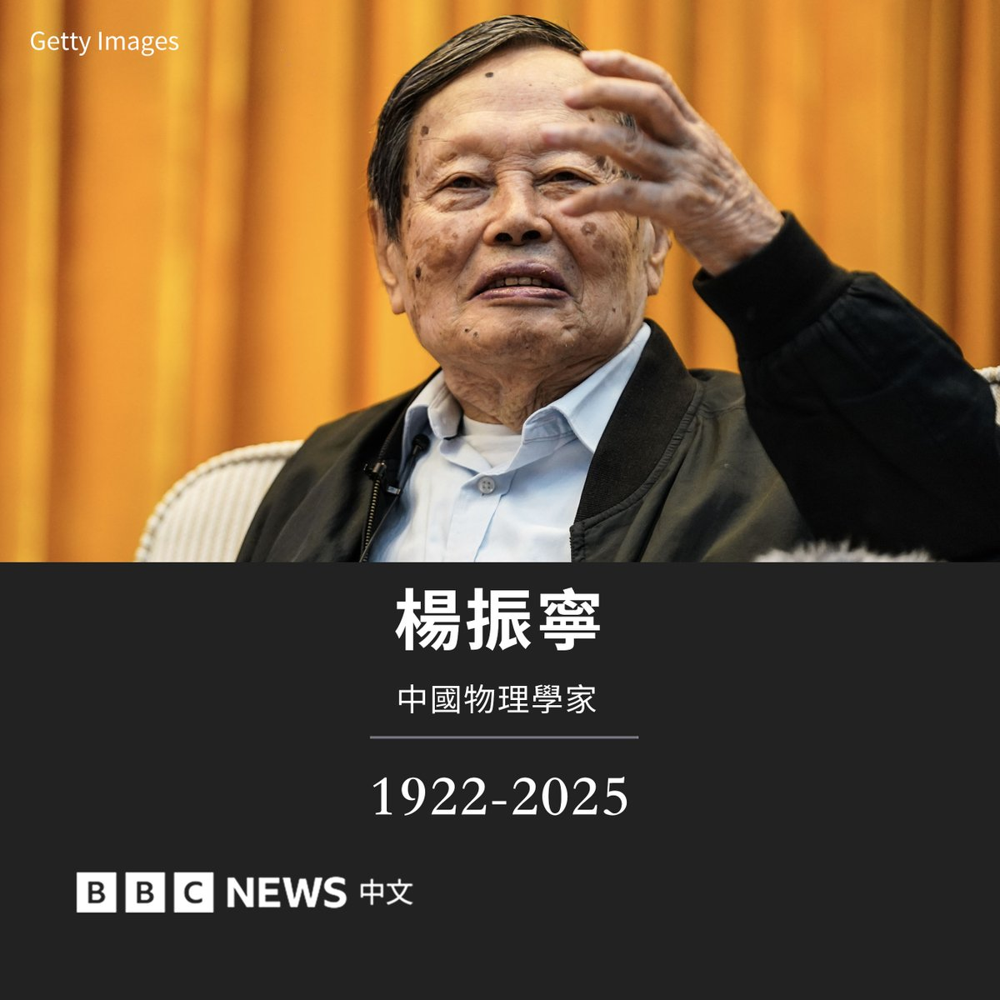

mortis
@0Yowlry
rest in peace

BBC News 中文
@bbcchinese
诺贝尔奖得主、理论物理学家杨振宁周六（10月18日）在北京逝世，享年103岁。
杨振宁被视为二十世纪最具影响力的物理学家之一。1956年，他与同是华裔物理学家的李政道共同提出宇称不守恒理论，获得诺贝尔物理学奖，成为最早获得诺贝尔奖的华人之一。
他还与罗伯特·米尔斯（Robert https://t.co/QwCoVSvB3D